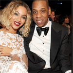

| Home | Destiny's Child | Sasha Fierce | Mrs. Carter |
|
|||
|
Mrs.Carter
|
Beyonce and Jay Z's Wedding Honestly, we were a bit disappointed to see that Bey did not get married in an ivory bedazzled bodysuit, and did not fly suspended over the aisle rather than walk down it, Beyoncé-stadium-concert–style. But she did look gorgeous in a strapless gown, despite the many missed performance opportunities here. (In their defense, maybe they performed “Crazy in Love” together at the rehearsal.) Note that, in a bit of foreshadowing, Bey painted her wedding nails blue—the name of her and Jay Z’s future daughter. And consider the fact that Jay Z had a close-up of himself literally putting a ring on it means that the couple employed a second videographer to get detail shots of the wedding. In addition to the bride, all of the female guests also wore white—much like Solange’s New Orleans wedding. And once Bey and Jay were wed, the couple walked through what looks to be a wintry wonder-scape complete with icicles! Considering that the couple did not release photos of their wedding, this may be the only peek we get at this important milestone in U.S. history—at least until their 14th wedding anniversary rolls around. |